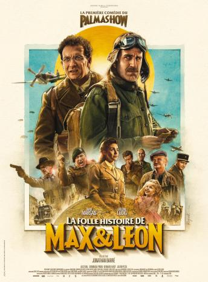
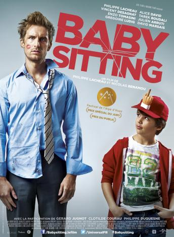
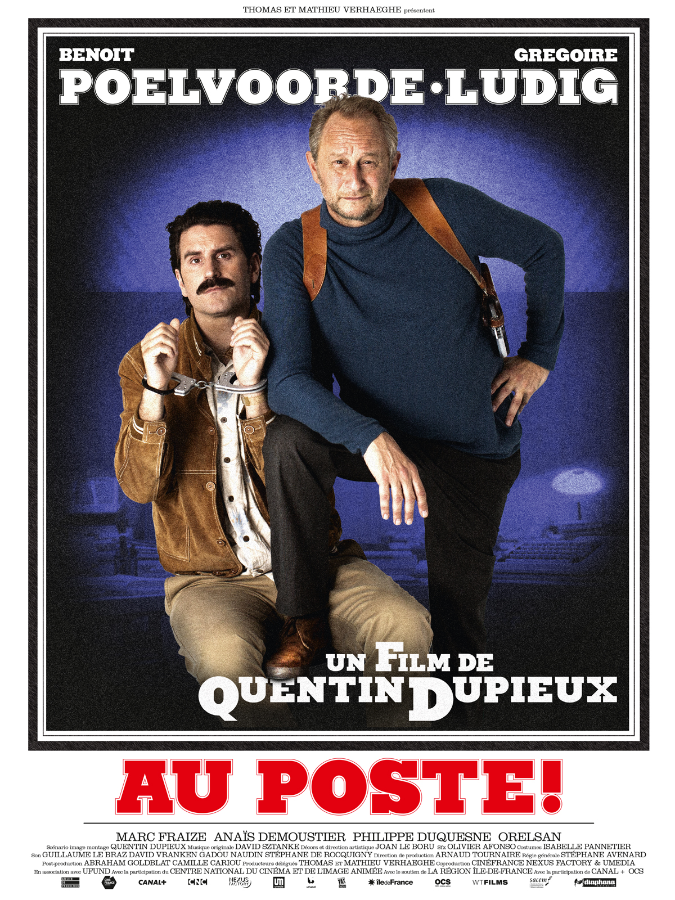
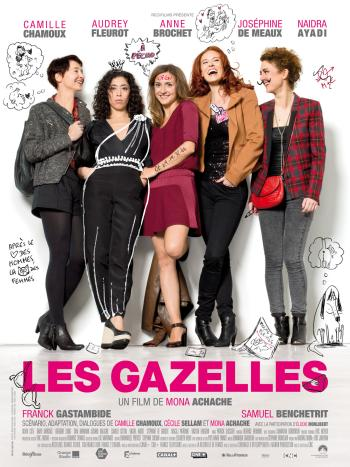

Quelques films dans lequel le duo a joué
Gregoire Ludig et David Marsais n'ont pas joués que dans le Palmashow on les retrouves dans bien d'autres oeuvres cinématographiques
Max et Léon
LePalmashowce n'est pas seulement de courts sketchs humoristiques, c'est aussi un film avec un budget de 11520000e et plus de 9400543e avec 1228232 entrées.
La Folle Histoire de Max et Léon est une comédie franco-belge réalisée par Jonathan Barré, sortie en 2016.

Le 3 septembre 1939, la France déclare la guerre à l'Allemagne. Le gouvernement décrète en même temps la mobilisation générale. Dans la petite ville de Mâcon, Max (David Marsais) et Léon (Grégoire Ludig) jouissent d'une solide réputation de « bons à rien ». Lors de la mobilisation, ils tentent de se faire réformer, mais en vain. Au départ, ce sont les conditions de la vie militaire qui vont leur déplaire au plus haut point. Pour se faire renvoyer à la maison, ils essaient même de se mutiler mutuellement, mais ils ne parviennent qu'à blesser l'adjudant Pichon (Julien Pestel), qui les a déjà dans son collimateur. Quand la défaite frappe, c'est encore moins réjouissant. Ils n'ont plus alors qu'une idée en tête : rentrer le plus vite possible et coûte que coûte chez eux. Mais leurs tentatives de rejoindre Mâcon vont systématiquement échouer par la force des événements. Suite à toute sorte de malentendus et de quiproquos, les deux amis vont se retrouver dans des situations toutes plus rocambolesques les unes que les autres. Leurs aventures vont les mener à travers la France occupée, en Angleterre et même jusqu'en Syrie.
Babysitting
Gregoire Ludig a aussi joué dans d'autres films tels que Babysitting qui est une comédie française écrite et coréalisée par Philippe Lacheau et Nicolas Benamou, sortie en 2014.

Franck, agent d'accueil aux éditions Schaudel, souhaite devenir dessinateur de bande dessinée. Alors lorsque son patron lui propose de lire une ébauche à condition qu'il garde son fils ce soir, Franck ne peut pas refuser. Le problème, c'est qu'il s'agit du jour de son anniversaire et ses amis ne comptent pas laisser tomber la fête qu'ils avaient préparée.
Au Poste!
Grégoire joué dans Au Poste! qui est un film franco-belge réalisé par Quentin Dupieux, sorti en 2018.

Synopsis:Le commissaire Buron est chargé d'enquêter sur le meurtre d'un homme retrouvé gisant dans son sang par Fugain. Celui-ci est logiquement considéré comme le principal suspect, il s'ensuit alors un interrogatoire qui va durer toute la nuit.
Les Gazelles
David Marsais lui a joué dans Les Gazelles quiest une comédie française réalisée par Mona Achache, sortie en 2014. Le film a été présenté pour la première fois en compétition au Festival international du film de comédie de l'Alpe d'Huez.

Synopsis: Marie, conseillère à Pôle emploi, se réveille un matin avec une drôle de sensation : elle étouffe dans sa relation avec Éric, son compagnon depuis 14 ans. Que faire ? Le quitter et se retrouver seule, célibataire à 30 ans, ou rester dans une relation qui ne la satisfait plus ? Les choix de Marie sont courageux mais pas toujours heureux..